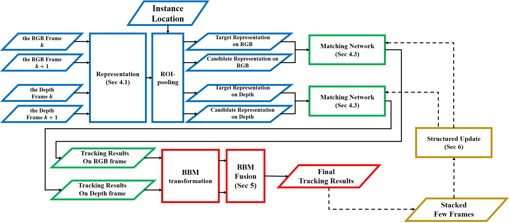

|

|
Multiple-object tracking is affected by various sources of distortion, such as occlusion, illumination variations and motion changes. Overcoming these distortions by tracking on RGB frames, such as shifting, has limitations because of material distortions caused by RGB frames. To overcome these distortions, we propose a multiple-object fusion tracker (MOFT), which uses a combination of 3D point clouds and corresponding RGB frames. The MOFT uses a matching function initialized on large-scale external sequences to determine which candidates in the current frame match with the target object in the previous frame. After conducting tracking on a few frames, the initialized matching function is fine-tuned according to the appearance models of target objects. The fine-tuning process of the matching function is constructed as a structured form with diverse matching function branches. In general multiple object tracking situations, scale variations for a scene occur depending on the distance between the target objects and the sensors. If the target objects in various scales are equally represented with the same strategy, information losses will occur for any representation of the target objects. In this paper, the output map of the convolutional layer obtained from a pre-trained convolutional neural network is used to adaptively represent instances without information loss. In addition, MOFT fuses the tracking results obtained from each modality at the decision level to compensate the tracking failures of each modality using basic belief assignment, rather than fusing modalities by selectively using the features of each modality. Experimental results indicate that the proposed tracker provides state-of-the-art performance considering multiple objects tracking (MOT) and KITTI benchmarks.
Sang-Il Oh and Hang-Bong Kang
Sensors, 17(4), p. 883, 2017.04.18
[Paper] [Video] [BibTeX]
Sang-Il Oh and Hang-Bong Kang
Sensors, 17(1), p. 207, 2017.01.22
[Paper] [Project page] [BibTeX]